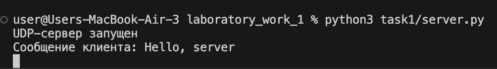
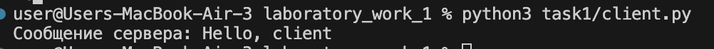
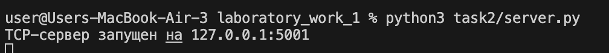
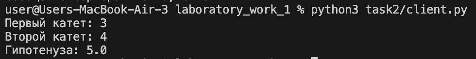
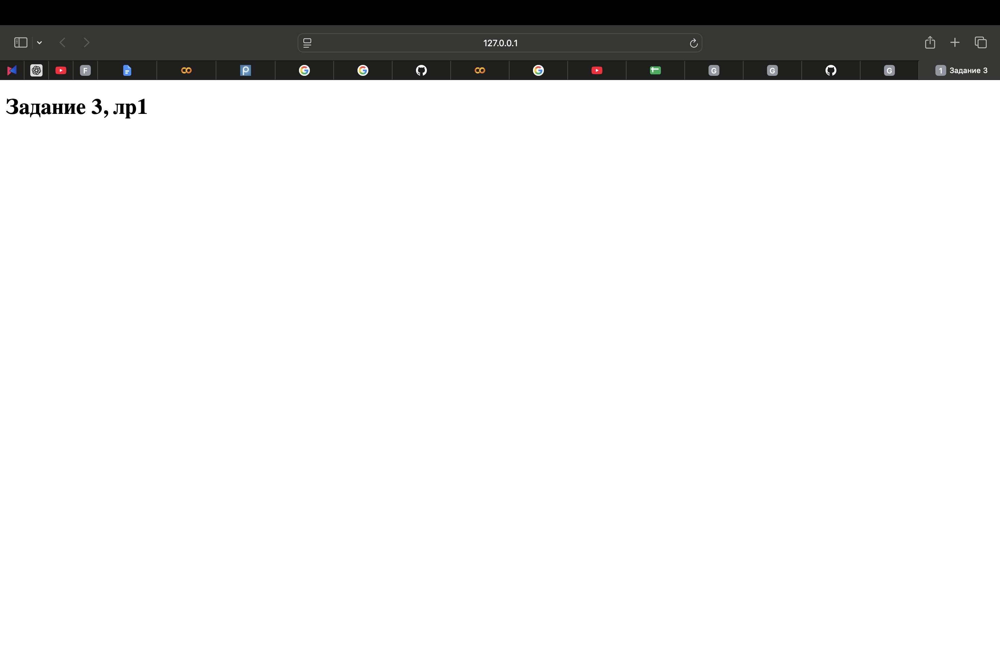
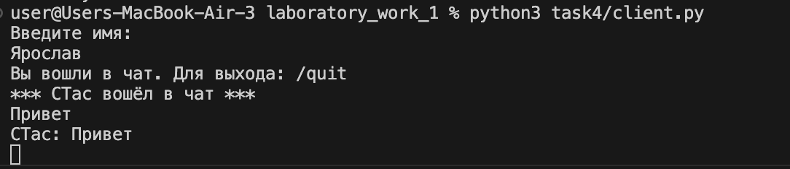
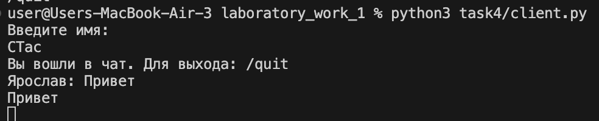
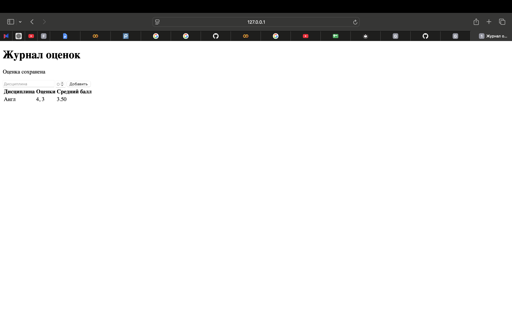

Лабораторная работа №1. Работа с сокетами
Выполнил: Прудий Ярослав
Группа: К3342
Задание 1. Обмен сообщениями по UDP
UDP передаёт отдельные сообщения без установки постоянного соединения.
Сервер
import socket
HOST, PORT = "127.0.0.1", 5001
def run_server():
with socket.socket(socket.AF_INET, socket.SOCK_DGRAM) as server:
server.bind((HOST, PORT))
print("UDP-сервер запущен")
while True:
data, address = server.recvfrom(4096)
print("Сообщение клиента:", data.decode())
server.sendto(b"Hello, client", address)
if __name__ == "__main__":
run_server()
Клиент
import socket
HOST, PORT = "127.0.0.1", 5001
def run_client():
with socket.socket(socket.AF_INET, socket.SOCK_DGRAM) as client:
client.sendto(b"Hello, server", (HOST, PORT))
data, _ = client.recvfrom(4096)
print("Сообщение сервера:", data.decode())
if __name__ == "__main__":
run_client()


Задание 2. Вычисление гипотенузы по TCP
TCP устанавливает соединение и обеспечивает надёжную передачу данных.
Сервер
import math
import socket
HOST, PORT = "127.0.0.1", 5001
def run_server():
with socket.socket(socket.AF_INET, socket.SOCK_STREAM) as server:
server.bind((HOST, PORT))
server.listen()
while True:
connection, _ = server.accept()
with connection:
a, b = map(float, connection.recv(1024).decode().split())
connection.sendall(str(math.hypot(a, b)).encode())
if __name__ == "__main__":
run_server()
Клиент
import socket
HOST, PORT = "127.0.0.1", 5001
def run_client():
a = input("Первый катет: ")
b = input("Второй катет: ")
with socket.create_connection((HOST, PORT)) as client:
client.sendall(f"{a} {b}".encode())
print("Гипотенуза:", client.recv(1024).decode())
if __name__ == "__main__":
run_client()


Задание 3. Раздача HTML-страницы по HTTP
HTTP работает поверх TCP. Сервер принимает запрос браузера и возвращает HTML-страницу.
Сервер
import socket
from pathlib import Path
HOST, PORT = "127.0.0.1", 5001
PAGE = Path(__file__).with_name("index.html")
def run_server():
body = PAGE.read_bytes()
headers = (
"HTTP/1.1 200 OK\r\n"
"Content-Type: text/html; charset=utf-8\r\n"
f"Content-Length: {len(body)}\r\n"
"Connection: close\r\n\r\n"
).encode()
with socket.socket(socket.AF_INET, socket.SOCK_STREAM) as server:
server.bind((HOST, PORT))
server.listen()
while True:
connection, _ = server.accept()
with connection:
connection.recv(1024)
connection.sendall(headers + body)
if __name__ == "__main__":
run_server()
HTML-страница
<!doctype html>
<html lang="ru">
<head>
<meta charset="utf-8">
<title>Задание 3</title>
</head>
<body>
<h1>Задание 3, лр1</h1>
</body>
</html>

Задание 4. Многопользовательский TCP-чат
Чат использует TCP. Для каждого клиента сервер создаёт отдельный поток.
Сервер
import socket
import threading
HOST, PORT = "127.0.0.1", 5001
clients = {}
def broadcast(message, sender=None):
for client in list(clients):
if client != sender:
client.sendall((message + "\n").encode())
def handle_client(client):
name = client.recv(1024).decode().strip()
clients[client] = name
broadcast(f"*** {name} вошёл в чат ***", client)
while True:
message = client.recv(4096).decode().strip()
if not message or message == "/quit":
break
broadcast(f"{name}: {message}", client)
del clients[client]
client.close()
def run_server():
with socket.socket(socket.AF_INET, socket.SOCK_STREAM) as server:
server.bind((HOST, PORT))
server.listen()
while True:
client, _ = server.accept()
threading.Thread(target=handle_client, args=(client,)).start()
if __name__ == "__main__":
run_server()
Клиент
import socket
import threading
HOST, PORT = "127.0.0.1", 5001
def receive_messages(client):
while data := client.recv(4096):
print(data.decode(), end="")
def run_client():
name = input("Введите имя: ")
with socket.create_connection((HOST, PORT)) as client:
client.sendall(name.encode())
threading.Thread(target=receive_messages, args=(client,), daemon=True).start()
while True:
message = input()
client.sendall((message + "\n").encode())
if message == "/quit":
break
if __name__ == "__main__":
run_client()


Задание 5. Журнал оценок с GET/POST
GET получает страницу, POST отправляет оценку серверу. Данные хранятся в словаре только во время работы сервера.
Сервер
import socket
from pathlib import Path
from urllib.parse import parse_qs
HOST, PORT = "127.0.0.1", 5001
TEMPLATE = Path(__file__).with_name("index.html")
def render_page(grades):
rows = "".join(
f"<tr><td>{subject}</td><td>{', '.join(map(str, values))}</td>"
f"<td>{sum(values) / len(values):.2f}</td></tr>"
for subject, values in grades.items()
) or '<tr><td colspan="3">Оценок пока нет</td></tr>'
page = TEMPLATE.read_text(encoding="utf-8")
return page.replace("{{GRADE_ROWS}}", rows).encode()
def run_server():
grades = {}
with socket.socket(socket.AF_INET, socket.SOCK_STREAM) as server:
server.bind((HOST, PORT))
server.listen()
while True:
client, _ = server.accept()
with client:
request = client.recv(4096)
head, body = request.split(b"\r\n\r\n", 1)
method = head.decode().split()[0]
if method == "POST":
form = parse_qs(body.decode())
subject = form["subject"][0]
grade = int(form["grade"][0])
if grade in range(2, 6):
grades.setdefault(subject, []).append(grade)
page = render_page(grades)
response = (
"HTTP/1.1 200 OK\r\n"
"Content-Type: text/html; charset=utf-8\r\n"
f"Content-Length: {len(page)}\r\n\r\n"
).encode()
client.sendall(response + page)
if __name__ == "__main__":
run_server()
HTML-страница
<!doctype html>
<html lang="ru">
<head>
<meta charset="utf-8">
<title>Журнал оценок</title>
</head>
<body>
<h1>Журнал оценок</h1>
{{NOTICE}}
<form method="POST" action="/">
<input name="subject" placeholder="Дисциплина" required>
<input type="number" name="grade" placeholder="Оценка" min="2" max="5" required>
<button type="submit">Добавить</button>
</form>
<table>
<thead><tr><th>Дисциплина</th><th>Оценки</th><th>Средний балл</th></tr></thead>
<tbody>{{GRADE_ROWS}}</tbody>
</table>
</body>
</html>
